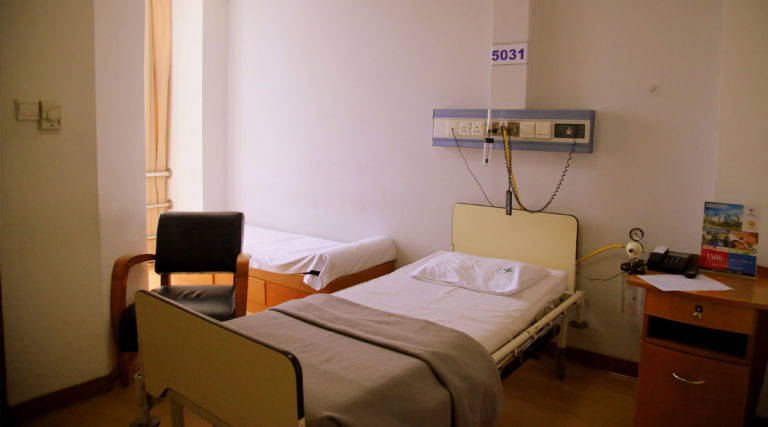

|
Our patients are our key stakeholders and our intention is to provide them with the best quality of service available at a Sri Lankan hospital. |
|
 |
ROYAL SUITEAs the name suggests, the Royal Suite comes with the luxuries of royalty. |
ORCHID SUITEIf you are staying at our Orchid Suite, you might just think you are on holiday. This Suite has all the amenities of a hotel, with space and facilities for the patient and their visitors. Fully served with air conditioning, television and phone, attached toilet and refrigerator, the Orchid Suite also has an adjoining visitor’s room with a sofa. |
 |
 |
PREMIUM ROOMDesigned with ample space for you and your loved ones, the 480sq ft Premium Room provides the facilities you need to make your visit as comfortable and relaxed as possible. The room is fully air conditioned with an attached toilet, individual TV and phone line. A unique facet of this suite is that there is a private corridor with seating facility that also has a separate WC. Inside the suite, a separate attendant’s area is furnished with a divan bed and a refrigerator. |
SUPER DELUXE ROOMOur Super Deluxe Room is designed to make your stay at Lanka Hospitals as comfortable as possible, with all the luxuries you enjoy at home. The Super Deluxe Room is equipped with air conditioning, a television and telephone, an attached toilet, attendant’s sofa and a refrigerator. |
 |
|  | DELUXE ROOMOur Deluxe Room gives you the privacy you desire whilst also being luxuriously comfortable. With all the prerequisite amenities, the Deluxe Room also includes supplementary facilities for your family and friends and is fitted with air conditioning, an individual television set and phone, an attached toilet, as well as an attendant’s bed. |
TWIN SHARE BASISOur Twin Share Rooms are a modest 265 sq ft in area, and are shared between two individual beds. The room has ample space and is equipped with air-conditioning, a television, individual phone lines and shared toilet facilities. |
 |
 |
GENERAL WARDOur General Ward is shared among 6 patients. Each ward is equipped with air conditioning, an individual telephone and shared television and toilet facilities. |
| Services | Doctors | New Life Hospital, No.26, Galle Road , Colombo 6 |
| Facilities | Health Packages | newlifehospital@gmail.com |
| Rooms | Patient Registration | 011 2635981 |
| Food & Beverages. | Channel your doctor | 011 2635982 |
©All Right Reserved | New Life Hospital